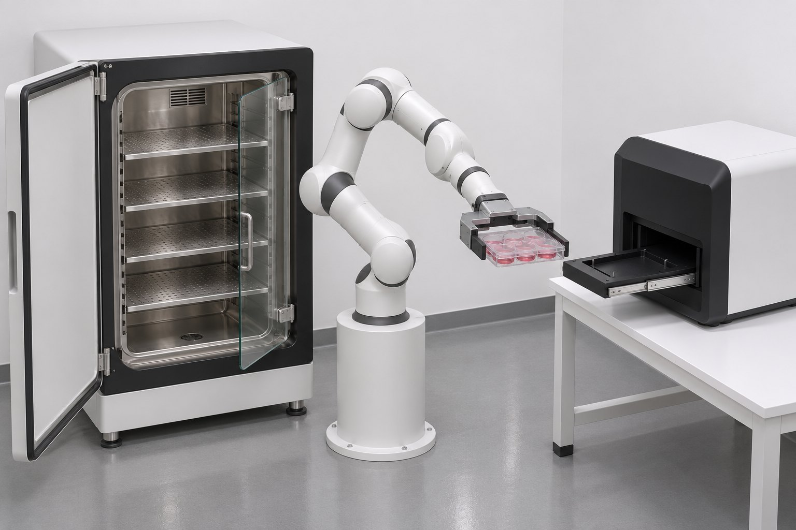
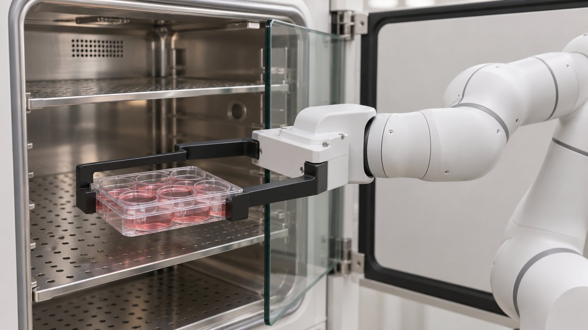
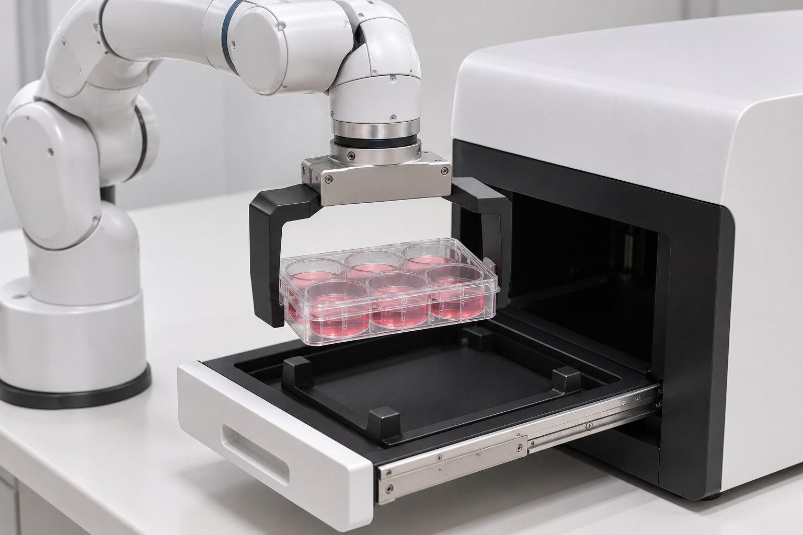

细胞传代薄切片 01：开培养箱取板，送到观察站
方案预览 · 2026-11-04 · 项目 cell-passaging-slice-01 · 流程阶段：方案预览（审批点①已通过）
1 目标与不做什么
目标
在黑灯实验室场景中完整跑通一个工艺步骤：电动培养箱开门 → Panda 从第 3 层隔板取出带盖六孔板 → 放进观察站伸出的抽屉，确认托住后松爪 → Panda 回到停靠位 → 抽屉收回，培养箱关门。
全程使用真实物理（MuJoCo），渲染为正常照明成片，不加速、不剪辑。
这个项目真正的交付物是流程：阶段日志、经验记录，以及最终提炼出的 skill。场景只是验收载体。
不做什么
- 移液、开盖、液体、离心、计数、分板
- Panda 推拉门（门和抽屉由执行器驱动）
- 吸头装卸、旋盖等已知 BLOCKED / FAIL 难点
- 黑灯氛围灯光、加速、剪辑
- Newton / UE5 / Isaac、导轨或 AMR、商用许可审查
- 夹爪：用定制外偏置宽指，不用原装手指。Panda 原装夹爪行程 80 mm，六孔板短边 85.5 mm、长边 127.8 mm，原装手指夹不住。做法是在两根原装手指上各加一段外偏置指，让 0–80 mm 的行程覆盖约 110–190 mm 的开口，夹板的两个短端。P3 用的也是 ±72 mm 的定制夹爪。见 R1。
- 取板位置：第 3 层（z≈0.555 m），板靠门放（板心 y≈−0.18 m）。可达性初筛：沿用 P3 布局时，第 1 层够不到；第 2 层要把 TCP 加长到 0.16 m 才够到；板放得再深，哪一层都够不到。见 R2。
- 新培养箱外形：0.70 × 0.70 × 0.95 m。与 P1-B 同一量级，方便对比。真实的 Heracell VIOS 160i 约 0.64 × 0.88 × 0.90 m，进深更大，所以这个尺寸是设计假设。
2 场景效果图
以下均为 AI 生成的概念图（gpt-image-2.5-flare），只用来对齐画面风格，不是工程图，尺寸、比例和机构细节以第 3、4 节为准。



3 布局俯视图
布局要点
- 起点沿用 P3 坐标，单位 m，Z 轴朝上。培养箱前方是 −Y 方向，观察站旋转 180° 后正面朝 +Y，抽屉向 Panda 方向伸出。
- 取板时手指沿 X 方向张合，从 −Y 侧水平伸入；放板时自上而下放入，手指同样沿 X 方向。
- 新培养箱的隔板高度按可达性来设计：第 3 层要落在可达范围中段，不追求和 P1-B 层高一致。
- 建模完成后允许微调布局，每次调整都要在阶段日志里记录原因。
可达性初筛（运动学 IK，不含碰撞）
| 目标位姿 | TCP 0.103 m（原装） | TCP 0.16 m |
|---|---|---|
| 第 1 层 z=0.315 | ❌ | ❌ |
| 第 2 层 z=0.435 | ❌ | ✅ |
| 第 3 层 z=0.555 | ✅ | ✅ |
| 第 4 层 z=0.675 | ✅ | ✅ |
| 任一层，板心更深 y=−0.065 | ❌ | ❌（第 4 层差 33 mm） |
| 门外预备位 / 抽屉放板位 | ✅ | ✅ |
脚本与结果：02-proposal/analysis/reach_screen.py 及同目录 JSON。只验证运动学，没有算碰撞和关节力矩；实际能否做到要到仿真阶段确认。
4 设备清单
PASS 原资产证据通过（有界）NOT_RUN 本项目尚未验证IDEALIZED 显式理想化，不计 PASS
5 工艺步骤时间线
本项目全部工艺步骤都用真实物理，没有理想化或符号化的工艺步骤。唯一的理想化是机器人底座的支撑（见 R6）。不使用 weld、mocap 或跟随约束伪造支撑。负例需要另外跑：抽掉支撑后板必须掉落；把部件过插时必须检测到碰撞。
6 流程阶段
审批点②之后由 agent 全程自主推进。每个阶段都要经过验证门（PASS / FAIL / NOT_RUN / BLOCKED / IDEALIZED，附证据），并写阶段日志（记录实测数据）和经验记录。遇到失败先复盘、调整做法，再继续推进；只有完全卡死时才报告。
7 风险与难度
| # | 风险 | 难度 | 证据 / 历史 | 对策 |
|---|---|---|---|---|
| R1 | 原装夹爪夹不住板：行程 80 mm，而板为 85.5 × 127.8 mm | L3 | Franka Hand 规格（外部参考）；P3 用的是 ±72 mm 的定制夹爪 | 定制外偏置宽指（待审批点①确认）；作为新建部件纳入建模阶段 |
| R2 | 可达性：沿用 P3 布局时，低层隔板和深处的板都够不到 | L3 | 本项目 IK 初筛（第 3 节） | 取第 3 层，板心 y≈−0.18；隔板高度按可达性设计 |
| R3 | 隔板间距约 120 mm，手部水平伸入时可能碰到上层隔板；搬运中盖可能滑动 | L3 | P3 有盖 xy / z 偏差的指标；本项目尚无 | 仿真门限加入"禁止接触对"和盖位移上限，在 plan 阶段冻结 |
| R4 | 被动自由体漂移超限 | L1 | P3 r2：0.225 mm，超过 0.1 mm 门限，FAIL；v3 加入 21 s 预静置后为 0.004 mm | 工艺步骤 0 做预静置，通过稳定窗口检查后再开始计时 |
| R5 | "支撑后释放"误判 | L3 | transfer_negative_audit_v10：支撑力 0 N 时，于 86.781 s 正确触发失败 | 松爪前检测抽屉对板的支撑反力；用 no_support 负例验证 |
| R6 | 机器人底座只有 2 µm 间隙、接触面积为 0，机器人固定在世界坐标系 | L1 | robot_pedestal_lumen_v02 README | 接受，标为 IDEALIZED 并公开说明；本项目不做安装件受力 |
| R7 | 渲染成本：不加速，帧数等于仿真时长 × 30 | L1 | P3 用 CPU 渲染，实测 89–192 s/帧；OptiX 的吞吐尚未实测 | 先做吞吐测试；超预算时降低采样数、加强降噪，不加速 |
| R8 | Blender 5.4 是 Alpha 版 | L1 | 冒烟测试 PASS；Alpha 版 API 可能变动 | 每次出现异常都记入阶段日志；必要时改用 5.3 正式版 |
| R9 | P3 v3 无法从归档复现，只能作为数据对照 | L1 | REUSE_INVENTORY：缺场景 assets 和轨迹 npz | 只比较时长、步数、门限和结果数值 |
总体仿真难度
最高难度等级为 L3（抓取与接触），没有 L4 / L5。最可能卡住的是 R1 + R3：偏置宽指能不能稳稳夹住板，并在不刮到隔板的情况下带盖退出。这一段的难度与 P3 的携板环节相当。
8 外部参考
只引用文字和数据，不下载、不嵌入外部图片。"可作资产"表示许可允许直接用于交付物。